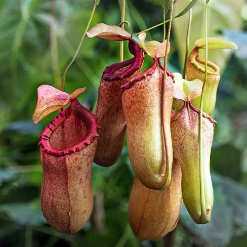

PLANTA JARRA
Nepenthes spp.

Utiliza colores llamativos y néctar en el borde de sus jarras para atraer insectos y capturarlos.
- Nombre científico: Nepenthes spp.
- Mimetismo: Usa colores llamativos y néctar en el borde de sus jarras para imitar estructuras florales o fuentes de alimento.
- Hábitat: Selvas tropicales y zonas montañosas del sudeste asiático.
- Sentidos: Visión y olor.
- Uso: Caza.
- Función: Alimentarse.